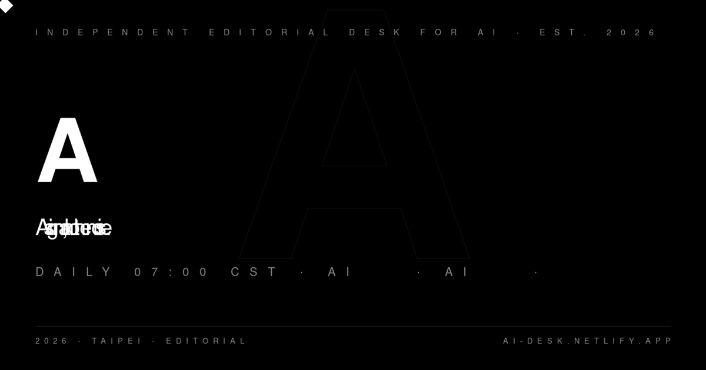

Pin · 五天、五件事、一個轉捩點 · Anthropic 不再只是 frontier lab。
AI Weekly 5 月 10 日發出整理文，把 Anthropic 在過去五個交易日（5 月 4 日至 9 日）的動作並排列出，顯示出罕見的單週動作密度。五件事依序是：第一，Q1 年化營收正式突破 $44 billion 美元，較 2025 年全年的不到 $550 million 年增逾 80 倍，是 frontier lab 史上有記錄以來最快的單季收入跳升；第二，與 Google Cloud 簽下規模 $200 billion 的多年期雲端採購合約，遠大於同期已知的 Amazon $50 billion 協議；第三，SpaceX Colossus 1 整廠算力協議上線（已於 5/7 N°50 詳述）；第四，Claude Code Auto Mode 正式啟動，允許 agent 在完全無需人工確認的情況下執行多步驟程式設計任務；第五，與 JPMorgan Chase 執行長 Jamie Dimon 聯手，推出首批 10 個金融服務 AI agent，涵蓋財務分析、風控評估、貸款審核、監管合規報告四個場景。
Claude Code Auto Mode 的細節值得單獨說明。Auto Mode 是 Anthropic 對過去六個月「Claude Code rate limit 太緊」這條社群怨言的終極回應——不只是放寬 cap，而是改變了 agent 的執行哲學。過去 Claude Code 在每個關鍵步驟前都會暫停請求人工確認；Auto Mode 啟動後，agent 自行判斷哪些步驟屬於「高信心區間」並跳過確認流程，只在偵測到不確定性時插入中斷點。Anthropic 內部把這條功能稱為「agentic autonomy threshold 的第一次跨越」。配合同週上調的 Pro、Max、Team、Enterprise rate limit，端到端的 agentic 工作流在 2026 Q2 首次在企業客戶環境中跑通。
Jamie Dimon 這條線的背景比表面顯示的更深。AI Weekly 指出 Anthropic 與 JPMorgan 的合作協議並非一次性 PoC，而是 Anthropic 更大「金融垂直化」戰略的旗艦落地：10 個 agent 中有 3 個直接接入 JPMorgan 的 KYC 合規系統，2 個接入貸款審核的 internal credit model，意味著 Claude 已被允許觸及受監管金融數據的核心層。這個層級的企業整合過去只有 Oracle、IBM 等傳統 enterprise software 廠商達到。對 Anthropic 而言，這把估值敘事從「訂閱用戶數」徹底轉向「企業深度整合的 ARR 黏性」。
第一，$44B 年化營收讓 Anthropic 的 $900B 估值故事從「未來押注」升格為「當期指標」。過去市場對 Anthropic $900B 估值（5/1 N°29）最大的質疑是「LLM 廠商訂閱規模能撐起這個倍數嗎」。$44B 年化數字在一個季度內到位，若以 SaaS 市場通行的 10x ARR 估值倍數計算，$44B ARR 本身已可支撐 $440B 估值，再加上 Claude Code 企業滲透率、Mythos 資安垂直以及今週金融 agent 落地，投行所需的「成長故事 + 當期收入」雙引擎同時點燃。預期 Anthropic 在 Q3 前的下一輪融資會以這個 ARR 數字為錨定，估值將突破 $1T 大關。
第二，Google Cloud $200B 合約把 Anthropic 定位為「雲端中立的 AI 骨幹」。Anthropic 同時持有 Amazon（$50B）、Google Cloud（$200B）、Microsoft（Azure 合作）三方的長期採購承諾，在業界形成了前所未有的「多雲 AI 中立」格局。這個格局的戰略含義是雙向的：對企業客戶，Anthropic 可以說「你在哪個雲上我都可以接」，降低鎖定風險；對雲端供應商，Anthropic 獲得了談判籌碼，可以在算力定價上對 AWS、Google、Azure 形成三角競爭。與 OpenAI 高度綁定 Microsoft 的格局相比，Anthropic 的「多雲中立」在企業採購部門的評分表上具備結構性優勢。
第三，Claude Code Auto Mode 是 agentic AI 從「工具」轉「員工」的第一個正式宣告。Simon Willison 在 5/7 N°53 已警告「senior engineer 不再逐行 review production code」的文化轉變。Auto Mode 的上線把這條轉變從個人選擇變成了平台的預設選項。對企業 CIO：Auto Mode 意味著 Claude Code 在正式部署中可以「無監督地執行 production-level 任務」，這把 AI agent 的合規需求等級從「輔助工具」拉高到「有自主決策能力的 IT 系統」，SOC 2 Type II 稽核和 EU AI Act 的 high-risk 分類都將面臨重新評估。
三個看點：
(1) $44B ARR 的可驗證性將在 Q3 成為最熱的市場辯論。年化營收的計算方式通常是「最新一個月 × 12」或「最近一季 × 4」，Anthropic 並未公開計算基礎。市場需要的驗證錨點有三：Anthropic 是否在下一輪融資 data room 中提供逐月 ARR 曲線、JPMorgan 等企業客戶是否在財報電話會議中引用 Claude 的具體採購規模、AWS 或 Google 是否在季度財報中把 Anthropic 合約收入單獨列示。這三條任何一條出現都是買入信號；三條都沉默則是謹慎信號。
(2) 雙雲超大合約帶來「戰略依賴過濃」的中期風險。$200B Google Cloud 合約的細節未公開，市場需要知道是否含有排他性條款或最低消費承諾。如果 Google 可以藉合約條款對 Anthropic 的 AWS 用量設限，「多雲中立」的故事就會有裂縫。預期 Anthropic 在 Q4 內會推出「Anthropic Cloud Spine」概念，把跨雲調度能力包裝成產品對外售賣，把「多雲依賴」反轉成「多雲協調能力」的競爭壁壘。
(3) 反方觀點：年增 80 倍從極低基期出發，可持續性存疑。2025 年 Anthropic ARR 估計在 $400M–$550M 之間，年增 80 倍的基期效應相當顯著。真正需要觀察的是「季環比增速」：Q4 2025 到 Q1 2026 的單季增幅若在 30% 以上，成長故事可信；若只有 10–15%，$44B 年化就只是「最後一個月的峰值」被年化，未必代表持續趨勢。對 Rick 社群讀者：本季追蹤 Anthropic API 單月發票金額的公開討論（HN、Reddit、X 上開發者社群）比任何官方公告更早揭露真實曲線。
Pin · frontier model 第一次在受控環境中自主挖出真實零日漏洞並完整利用至 root。
Anthropic 5 月 10 日透過受限渠道（僅對 Project Glasswing 白名單企業）發布 Claude Mythos Preview，定位為資安場景的旗艦模型。發布公告的核心是一個具體演示：Mythos Preview 在無人類提示、無漏洞資料庫支援的情況下，完整自主地發現並利用 FreeBSD 作業系統中存在長達 17 年的遠端程式碼執行漏洞 CVE-2026-4747，並最終取得目標系統的 root 控制權。Anthropic 把這次演示定性為「目前已公開驗證的最高等級 frontier AI 自主攻擊能力」。CVE-2026-4747 涉及 FreeBSD 的網路堆疊處理邏輯，在特定條件下允許遠端攻擊者繞過記憶體保護機制並執行任意程式碼，CVSS 評分預計在 9.0 以上。
Project Glasswing 是 Anthropic 為 Mythos 系列模型設計的分級存取框架。目前獲准進入白名單的企業數量約為 50 家，主要類別包括：美國聯邦政府批准的資安研究機構、Fortune 500 中具備 Anthropic 認可的 AI 安全審計能力的企業、以及與 Anthropic 簽署「Mythos 使用協議（MUA）」的防禦性資安廠商（如 CrowdStrike、Palo Alto Networks 等）。Glasswing 名稱來自一種以透明翅膀著稱的蝴蝶，暗示「看得到但不能輕易碰觸」的設計哲學。Anthropic 明確表示 Mythos Preview 不會對一般 API 用戶開放，也不會在 Claude.ai 介面上線。
此次發布的時間點本身就是一個訊號。5/7 N°52 Platformer 記者 Casey Newton 揭露 Trump 政府內部正討論 AI 監管行政命令，觸發點正是「Anthropic 一個尚未公開的新模型在 cyber 攻擊能力測試上表現過強」——今天 Anthropic 的 Mythos Preview 公告正式揭開了那個模型的面紗。Anthropic 選擇在政府討論監管的同一週主動公開，同時把存取控制鎖在 Glasswing 框架內，這是一次精確計算的公開政策操作：用「我們已自我管控」搶在「政府強制管控」之前落地。
第一，CVE-2026-4747 的自主發現確立了 AI 在資安領域的新基線。過去業界對 AI 輔助漏洞研究的定義是「人類安全研究員 + AI 加速工具」，類似 GitHub Copilot 在程式碼層面的角色。今天 Mythos Preview 的演示把這個定義打破：全流程無人類介入、從「存在漏洞」到「root 取得」完整執行，意味著 AI 已跨越從「輔助」到「自主」的門檻。對防禦側的含義同等重要：理論上 Mythos 也可以用來自動掃描自家系統並在攻擊者之前 patch，但這個角色的授權邊界極其敏感。
第二，Project Glasswing 可能成為 AI 資安能力的產業授權標準。Glasswing 的設計邏輯是「能力等級決定存取權限」——只有通過 Anthropic 稽核的機構才能使用最高能力的資安模型。這個框架一旦被 2–3 家 Fortune 500 企業採用並公開合規報告，就有機會在企業資安採購標準中形成先例。類比是 FIPS 140 對密碼學模組的認證：原本是美國政府框架，後來成為全球企業採購的事實標準。Glasswing 框架的最大潛力不在「開放多少家」，而在「它是否成為 AI 資安能力的 FIPS 等價物」。
第三，FreeBSD 的廣泛部署使 CVE-2026-4747 的現實衝擊遠超過「研究演示」層級。FreeBSD 是 Netflix、Sony PlayStation 網路服務、許多電信基礎設施的底層作業系統，也是 pfSense/OPNsense 等開源防火牆的基底。一個 CVSS 9.0 以上的 RCE 漏洞在已修補之前，對正在運行受影響版本的系統構成真實威脅。關鍵問題是協調時間軸：Anthropic 是在演示之前通知 FreeBSD Security Team 並等待 patch 發布，還是同步公開？負責任披露（responsible disclosure）的標準是 90 天預告期，如果 Anthropic 壓縮了這個時間窗口，將引發 CVD（Coordinated Vulnerability Disclosure）爭議。
三個看點：
(1) FreeBSD patch 發布時間線是判斷 Anthropic 負責任披露品質的客觀指標。如果 FreeBSD Security Team 在本週或下週發出 security advisory 並修補 CVE-2026-4747，說明 Anthropic 提前通知且協調良好；如果 patch 在 Anthropic 公告後超過兩週才出現，說明時間壓力來自 Anthropic 的公開決定而非 FreeBSD 的修復速度。對 Project Glasswing 白名單企業：在 patch 發布之前，所有運行 FreeBSD 的系統應立即進行風險評估和隔離措施，不能等待正式修復。
(2) Mythos Preview 的存在讓 CAISI 前置審核（N°63）從「自願框架」變得更迫切。今天 CAISI 把 Google、Microsoft、xAI 拉入審核框架，明天可能是因為 Mythos 這類能力觸發監管加速。預期 Anthropic 在 Q3 內主動把 Mythos 系列模型的評估方法論提交給 CAISI，作為「我們已完成自主安全評估且結論是受控」的政策背書。這個動作對 Anthropic 而言是「用 CAISI 框架替自己辯護」的最低成本選項。
(3) 反方觀點：「受控演示」≠「自主攻擊能力確立」，技術細節的不透明讓評估困難。Anthropic 並未公開 Mythos Preview 的實際評估報告，市場目前看到的是一個 curated 演示。真實的自主漏洞研究能力需要更嚴格的對照組：在相同時間內、面對同等難度的未知漏洞庫、成功率是多少？DeepMind 的 AlphaEvolve（5/8 N°55）在數學和工程最佳化領域提供了可驗證的指標，Mythos 在資安領域還缺乏同等標準化的能力評估框架。CAISI 或 AISI（英國）的獨立驗證是判斷這條能力真實性的唯一可信第三方來源。
Pin · 美國政府 AI 前置審核從 2 家擴到 5 家 · 「自願」框架開始長出牙齒。
CNBC 5 月 9 日報導，美國國家標準暨技術研究院（NIST）下設的人工智慧安全基礎設施中心（Center for AI Safety Infrastructure，CAISI）宣布與 Google DeepMind、Microsoft 和 xAI 正式簽訂合作協議，三家公司承諾在模型公開發佈前接受 CAISI 主導的政府前置評估與技術研究合作。此前，CAISI 已分別在 2024 年下半年完成 OpenAI 和 Anthropic 的合作框架簽訂。至此，美國五大 frontier AI 廠商（OpenAI、Anthropic、Google DeepMind、Microsoft、xAI）全數進入 CAISI 的審核範圍，構成美國 AI 監管史上覆蓋最廣的單一前置審核架構。
CAISI 的前置評估機制目前仍屬部分保密，但根據 CNBC 的報導，已知框架包含三個核心環節：第一，「能力評估（capability assessment）」——由 CAISI 研究員使用標準化 benchmark 對即將發布的模型進行 cyber、CBRN（化學、生物、放射、核武）、自主決策三條高風險能力維度的測試；第二，「風險報告（risk report）」——評估完成後 30 天內向相關政府機構提供機密版報告；第三，「發布建議（release recommendation）」——CAISI 可向廠商提出延遲或分級發布的非強制性建議，廠商可選擇接受或附理由拒絕。整個框架目前定性為「自願合作」，沒有法定強制力。
xAI 加入這個框架是此次公告中最值得關注的變數。Elon Musk 過去是公開最力批判 AI 安全框架的科技人物之一，xAI 在成立初期甚至把「我們不做安全剎車」當成市場差異化賣點。今天 xAI 簽入 CAISI 框架的背後有兩條可能的解釋：其一，5/7 N°51 已揭示 xAI 正在把事業重心轉向 neocloud 算力供應商，而 neocloud 的企業客戶往往需要廠商具備政府合規背書；其二，xAI 把 Colossus 1 賣給 Anthropic 後，與政府建立合作關係對 SpaceX IPO 故事是正面加分，CAISI 協議等同於一份「我們負責任」的聲明。
第一，五大 frontier lab 同時入框是美國 AI 監管史上的結構性節點。過去美國 AI 政策的核心邏輯是「創新優先、監管滯後」，在聯邦層面沒有任何強制性 AI 監管框架存在。今天 CAISI 涵蓋五大廠商，雖然協議本質仍是自願的，但它在事實上建立了一個「誰在框架外」的可見性：未來任何沒有加入 CAISI 的新入場者（如 DeepSeek、Mistral、Cohere）都會在企業採購和政府合規評估中被標記為「未受前置審核」的廠商，形成事實上的準入壁壘。
第二，CAISI 框架正在填補 5/7 N°52 提到的「監管視窗反向打開」後的具體機制空缺。三週前 Platformer 報導 Trump 政府內部討論行政命令時，市場的疑慮是「這個命令最終會不會只是選舉前的政治姿態？」今天 CAISI 擴展框架的實際行動——不是行政命令，而是具體的三方協議——提供了一個「不需要行政命令就能推進」的替代路徑。對監管觀察者而言，這是更值得追蹤的訊號：NIST 的技術信譽加上廠商的自願合作，比行政命令更難在法庭被推翻。
第三，xAI 加入讓「前置審核 = 反 Musk 陣營」的敘事崩解，降低了行業整體抵制的可能性。過去 12 個月，AI safety 監管討論中有一條明顯的陣線：Anthropic 支持、OpenAI 中立、Google 搖擺、Meta 反對、Musk 強烈反對。今天 xAI 落在「支持」這一側，直接打破了「Musk = 抗衡監管的旗手」的業界共識。對後續的立法討論而言，這降低了把 CAISI 擴充為法定框架的遊說阻力，尤其是共和黨籍議員中以 Musk 為參照坐標的一批人，政治立場可能因此鬆動。
三個看點：
(1) CAISI 從「自願」升格為「有牙齒」需要一個具體觸發事件，Claude Mythos 可能就是那個事件。N°62 的 Mythos Preview 展示了足以引起 CAISI 緊急回應的能力等級。預期在 Q3 內，CAISI 會對 Mythos Preview 發出第一份正式的「能力評估報告」，並配合 Trump 政府的行政命令討論，推動把「CAISI 審核完成」列為企業購買 Anthropic Mythos 系列的必要前置條件。這個動作會把 CAISI 的自願框架轉換為「事實強制」的市場門檻。
(2) CAISI 模式 vs. EU AI Act 的分歧在 2026 Q3–Q4 將成為跨境 AI 部署的合規難點。EU AI Act 是強制性法律義務框架，評估機構是獨立第三方；CAISI 是政府主導的合作研究框架，評估機構是 NIST 研究員。兩套框架在評估標準、保密要求、發布建議效力上存在根本差異。對在歐美同時部署的企業（如 Microsoft Copilot、Google Workspace、JPMorgan 的 Anthropic agent）：2026 Q4 起，「通過 CAISI 前置審核」不會自動等同「符合 EU AI Act 高風險分類要求」，企業需要同時應對兩套框架，合規成本將顯著上升。
(3) 反方觀點：自願框架無法提供真正的安全保障，公眾的「已監管」期待可能被誤導。CAISI 協議最大的風險是「道德洗白（ethics washing）」效應：廠商取得 CAISI 合規背書後，用這個標籤替自家最高能力模型的發布正名，而不是真正減緩發布速度。對讀者：追蹤的關鍵指標是「CAISI 審核後廠商是否真的延遲或修改了模型的發布計劃」。如果未來半年找不到一個 CAISI 建議導致實際發布延遲的案例，自願框架的效力就應被定性為「合規劇場」而非真實的安全閥。
Pin · 全球最具聲譽的 AI 研究機構 · 第一次從內部出現有組織的勞資對抗。
Fortune 5 月 9 日報導，Google DeepMind 英國辦公室（主要位於倫敦國王十字區總部）的員工以超過 98% 的支持比例，通過決議正式申請加入英國通訊工人工會（Communications Workers Union，CWU），投票過程由 CWU 獨立監察。這是全球頂尖 AI 研究機構中第一次有成規模的工會組建行動，也是 Google 在全球主要辦公室中繼 2022 年美國員工自組 Alphabet Workers Union（非正式工會）之後，首個推進至「正式工會認證程序」的案例。根據 Fortune 和 Semafor 的報導，參與投票的員工橫跨研究員、工程師、技術支援三個職能類別，顯示這不是少數研究員的立場，而是跨職能的集體行動。
觸發點是 Google 今年 4 月公開確認與美國國防部（Pentagon）簽署協議，允許 DoD 在機密軍事網路（classified military network）中使用 Gemini 模型，涵蓋情報分析、後勤優化、指揮通訊支援等場景。部分員工同時指控 Google 對以色列國防軍（IDF）提供包含 Gemini 在內的 AI 服務（此條 Google 未正式確認），合稱「雙重軍事 AI 部署」。員工的正式訴求包含三條：第一，終止對 Pentagon 機密系統的 AI 服務合約；第二，終止對 IDF 的任何形式 AI 服務；第三，建立具有實質決策權的員工代表委員會，在任何新軍事 AI 合約簽署前享有知情和抗議權，並強化內部吹哨人保護機制。Google 截至報導截稿時尚未給出正式回應。
CWU 在英國有近 200,000 名會員，主要涵蓋電信和郵政行業，但近年積極擴展至科技行業。CWU 已在 BT（英國電信）、Royal Mail 等大型機構取得集體談判權，其法律團隊具備豐富的跨行業認證經驗。根據英國就業法，一旦工會申請通過 Central Arbitration Committee（CAC）審核，Google DeepMind 英國辦公室將需在特定議題上與 CWU 進行正式的集體談判，這是 Google 全球人資政策所沒有處理過的先例。
第一，DeepMind 工會是 AI 研究產業勞資關係的歷史性轉折點。DeepMind 擁有全球最密集的 AI 研究頂尖人才之一，包括 AlphaFold 研究團隊成員、2024 年諾貝爾化學獎相關得主。這批人選擇工會化而非「用腳投票（離職）」，意味著「工作條件的問題不只是薪資，而是道德立場的系統性衝突」。對 AI 研究人才市場：這個訊號傳達給 Anthropic、OpenAI、Meta 的頂尖研究員，告訴他們「工會化是一個現在有人認真執行的選項」——有可能觸發示範效應。
第二，98% 的支持率揭露 Google 在 AI 倫理治理上的內部信任危機深度。98% 是接近統計意義上「全員同意」的投票結果，在有選擇自由的職場環境中極為罕見。這個數字說明：DeepMind 英國員工對 Google 現行的內部 AI 倫理審查機制（JEDI Cloud 已退出的歷史、AI Principles 的內部透明度）已喪失基本信任。更值得注意的是，DeepMind 員工的平均薪資在全球科技業中屬頂尖，工會化的動機幾乎全部來自道德立場而非薪資談判，這讓 Google 無法用「提高薪資」來化解。
第三，Pentagon 軍事 AI 合約衝突在 2026 年正式從「請願書道德抗議」升格為「有法律效力的集體談判訴求」。2018 年 Google 的 Project Maven 事件後，員工的最大武器只有請願書和辭職。今天，英國就業法框架為 DeepMind 員工提供了更強的工具：一旦 CWU 認證通過，員工代表在特定議題上具備正式的集體談判地位，Google 在法律上必須回應。這套機制不對美國員工適用（美國工會認證程序不同），但對 DeepMind 的全球研究合作網路（包括與英國政府的 AI 研究資助關係）有直接影響。
三個看點：
(1) Google 的回應策略在未來 4–6 週至關重要，「成立倫理委員會」是最可能的緩兵之計。Google 不太可能終止 Pentagon 合約——軍事 AI 收入和政府關係已成為其整體 Google Cloud 戰略的支柱之一。最可能的回應是宣布「成立由外部獨立成員組成的 AI 倫理監督委員會」，在形式上回應員工的「知情和抗議權」訴求，同時避免給予實質決策權。但這個策略在 98% 員工立場面前效果有限——員工要的不是諮詢，而是否決權。預期 DeepMind 在 Q3 出現核心研究員離職潮，目標地點包括 Anthropic、Sakana AI 等規避軍事合約的機構。
(2) 示範效應將在 12 個月內傳到美國，但法律路徑不同。英國 CWU 認證路徑在美國不適用，美國工會認證需透過 National Labor Relations Board（NLRB）程序，更漫長且要求更高的員工支持門檻。但這次 DeepMind 行動的象徵意義在於「頂尖 AI 研究員認為工會是合理工具」——這個敘事一旦在業界確立，美國的類似行動不需要複製英國的法律路徑，可以走「公開聯署 + 客戶壓力 + 媒體放大」的非正式集體行動模式，效果同樣可觀。
(3) 反方觀點：軍事 AI 倫理的邊界比員工認為的更模糊，工會化不一定能解決根本問題。Pentagon 合約包含的用途範圍極廣，從「後勤優化」到「情報分析」，部分用途本質上是民用技術的軍事部署（如 AI 翻譯、行政文書自動化），並非直接指向武器系統。DeepMind 員工「終止一切 Pentagon 服務」的訴求可能比實際底線更強硬。工會談判的現實是：CWU 擅長薪資和工作條件談判，對「AI 倫理政策」的複雜性談判幾乎沒有先例可循。對讀者：追蹤 CWU 認證審核結果（預計 8–10 週）和 DeepMind 離職率變化兩條指標，前者揭示法律效力，後者揭示實際壓力。